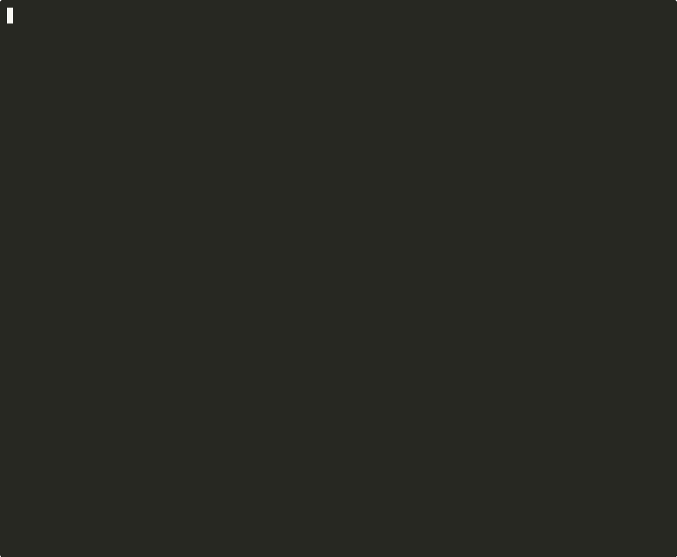

Scans X for new GitHub repos via Grok, mines reusable patterns with LLM, stores them forever, and injects them into your builds — with passing tests and full provenance.
No other tool closes this loop: discover → mine → store → retrieve → build → verify → attribute

Ten capabilities no other tool combines in one pipeline.
When builds fail verification, CAM byte-level restores the workspace and re-prompts the agent with exact violations + test output. Up to 3 retries. Proven: 3 corrections on Run 1 → first-attempt success on Run 2 (10/10 tests, drift 0.868).
"at least 90% coverage" auto-extracts to a hard verification gate. Supports coverage %, test count, file count. Hard gates block approval; soft gates recommend. 51 tests cover the extraction + enforcement pipeline.
Two-phase staleness detection. Phase 1: ETag-cached metadata check (0 rate limit cost for unchanged repos). Phase 2: 4-factor significance scoring (commits 30%, releases 40%, README 20%, size 10%). Only significant changes trigger re-mine.
Tiered mining: micro (<100 MB) gets full clone, standard/large use metadata-only API to avoid downloading weights. cam pulse ingest https://huggingface.co/... works transparently alongside GitHub URLs. 81 tests.
Beyond cosine similarity: cosine (30%) + BM25 (20%) + fitness (20%) + freshness (10%) + cross-domain synergy (10%) + source diversity (10%). Configurable weights. Proven methodologies rank higher.
When methodologies are retrieved together and the build succeeds, CAM strengthens links between them. Patterns that work together surface together in future retrievals. Failure weakens links.
X-Scout uses Grok API's native x_search to find repos developers share on X, filters for novelty, and auto-assimilates them into your knowledge base. No scraping.
Methodologies are injected into agent prompts as structured context. Proven: Retrieved=3, Used=3, Attributed=3. Output includes passing tests and traceable provenance.
CAM improves its own source code via a 7-gate validation pipeline (Syntax → Config → Import → DB → CLI → Pytest → Diff). Safety first, evolution second.
LLM mining output is malformed ~75% of the time. CAM's 3-stage parser achieves a 100% repair rate on real-world malformed data. No repo is lost to syntax errors.
TruffleHog pre-assimilation gate blocks repos with leaked credentials before they reach the mining pipeline. Built-in regex fallback with 11 high-value patterns when binary is absent.
Five stages. Multi-pass mining. Knowledge injection. Loops forever.
Search X via Grok
URL + semantic dedup
Classify → overlap → mine
Fleet registration
Budget + circuit breaker
Powered by Grok API's native x_search tool — no scraping, no workarounds.
The 8-step CAM core workflow. Verify → Correct loop (up to 3x) runs within Execute. Each step produces verifiable artifacts.
Real commands. Real output. Copy and run.
# Install and verify git clone https://github.com/deesatzed/CAM-Pulse.git cd CAM-Pulse pip install -e ".[dev]" # Smoke test cam --help cam govern stats cam pulse preflight
# One-shot X scan: search, filter, assimilate cam pulse scan \ --keywords "AI agent framework,new repo" \ --from-date 2026-03-21 # Dry run (scan + filter only, no cloning/mining) cam pulse scan --dry-run # View results cam pulse discoveries --limit 20 cam pulse status
# Start perpetual polling daemon (default: every 30 min) cam pulse daemon # Custom interval cam pulse daemon --interval 15 # View scan history and daily report cam pulse scans cam pulse report # Docker swarm deployment docker compose -f pulse/docker-compose.pulse.yml up -d
# Quick preview: file stats + domain signals (no LLM, free) cam mine-self --quick # Full LLM-powered mining of your own project cam mine-self # Mine a specific project directory cam mine-self --path /path/to/project # Extract patterns without generating tasks cam mine-self --no-tasks
# Check all tracked repos for staleness cam pulse freshness --verbose # Seed freshness metadata for existing discoveries cam pulse freshness --seed # Auto-refresh stale repos (significance >= 0.4) cam pulse freshness --auto-refresh # Re-mine a specific repo cam pulse refresh https://github.com/bytedance/deer-flow # Re-mine all stale repos cam pulse refresh --all # Preview without modifying cam pulse refresh --all --dry-run
# Ingest a HuggingFace model repo (auto-detects URL type) cam pulse ingest https://huggingface.co/microsoft/phi-3-mini-4k-instruct # Works with GitHub too — same command cam pulse ingest https://github.com/bytedance/deer-flow # Ingest HF repo by ID with revision control cam pulse ingest-hf d4data/biomedical-ner-all --revision main # Force re-ingest even if already assimilated cam pulse ingest --force https://huggingface.co/BAAI/bge-small-en-v1.5
# Scan directories for repos (preview only, no LLM) cam mine-workspace ~/projects ~/experiments --scan-only # Mine up to 20 repos across directories cam mine-workspace ~/projects --max-repos 20 # Only mine repos that changed since last scan cam mine-workspace ~/code --changed-only # Deep scan with higher directory depth cam mine-workspace ~/projects --depth 8
Twelve end-to-end showpieces with real code, real validation, and real output. Each was run, checked, and documented.
Autonomous end-to-end pipeline: X-Scout discovers 18 repos from live X feeds, novelty filter scores each one, 16 novel repos are cloned, mined by LLM, and stored as 86 new methodologies — all in one cam pulse scan command.
Discovered: 18 repos from X
Novel: 16 (2 already known)
Assimilated: 16/16 (0 failed)
Methodologies: 86 new patterns stored
JSON repair: 100% recovery (16/16 repaired)
The definitive proof that PULSE-mined knowledge is not just stored — it is retrieved, injected into agent prompts, and used to produce working code with passing tests. Full methodology content (implementation sketch, solution code, activation triggers) injected as ## Retrieved Knowledge section.
Task: Pre-tool-call guardrail system
Retrieved: 3 methodologies from bytedance/deer-flow
Agent output: 157 lines, 4 files, quality 0.85
Tests: 4/4 passing (pytest -v)
Attribution: 3 patterns traced to mined source
Three-pass mining replaces the monolithic single-LLM-call approach. Pass 1: rule-based domain classification (free). Pass 2: knowledge overlap assessment (embedding search). Pass 3: focused deep-dive with domain-specific directives and adaptive token budget.
Pass 1: Domain classification (10 categories, 0 cost)
Pass 2: KB overlap (overlap_score, suggested_focus)
Pass 3: LLM mining with structured context
Token budget: small=2K, medium=4K, large=6K
9 prescreened repos, 52 methodologies ingested
Cross-repo knowledge synthesis: CAM retrieves patterns from 3 mined repos and builds a cohesive plugin event system with typed event bus, middleware chain, plugin loader, and loop detection. 258 lines of working code, 5/5 tests passing.
Retrieved=3 | Used=3 | Attributed=3 | Quality=0.82
258 source lines across 5 modules
Event bus + middleware + plugin loader + loop detection
Knowledge compounds: Build A patterns inform Build B
CAM clones its own source, enhances the copy using its multi-agent system, validates through 7 gates (Syntax, Config, Import, DB, CLI, Pytest, Diff), and atomically swaps the live install. Rollback on failure.
Ranked improvement recommendations with confidence scores derived from mined knowledge. Evaluates a repo and produces actionable enhancement plans backed by real methodology evidence.
5-level escalating complexity: health check → build → validate → mine → self-improve. Each level exercises progressively more of CAM's pipeline.
Full create → validate → postcheck cycle on a real CSS codebase. Proves the validation pipeline works on non-trivial repos with actual workspace diffs verified.
Workspace byte-level snapshot → verify → classify failure → restore → re-prompt agent with violations + test output. Proven: Run 1 triggered 3 correction retries. Run 2 succeeded first attempt: 10/10 tests, drift 0.868, quality 0.76.
Run 1: Correction loop triggered 3x
Workspace restore: confirmed working
Feedback injection: confirmed working
Run 2: First-attempt success
Tests: 10/10 | Drift: 0.868 | Quality: 0.76
Knowledge: 2 PULSE patterns injected
Lifecycle: embryonic → viable
Natural language specs auto-extracted to structured verification gates. "greater than 90 percent coverage" becomes MetricExpectation(min_coverage_pct, gte, 90, hard=True). Hard gates block approval. Soft gates recommend.
min_coverage_pct: pytest --cov TOTAL parsing
min_test_count: pytest summary line parsing
min_files_changed / max_files_changed
Operators: gte, gt, lte, lt, eq
37 tests (metrics) + 14 tests (min_tests)
Phase 1: ETag-cached GitHub metadata check (0 rate limit cost for unchanged repos). Phase 2: 4-factor significance scoring. Only repos with significance ≥ 0.4 trigger re-mine. Old methodologies gracefully transition to declining.
commits_since_mine * 0.3
+ new_release * 0.4
+ readme_changed * 0.2
+ size_delta * 0.1
Threshold: 0.4 (configurable in claw.toml)
Two-gate architecture: TruffleHog (800+ credential detectors) scans every repo before mining. CRITICAL findings block assimilation. Non-critical findings trigger Gate 2 file filtering in the serializer. Regex fallback with 11 patterns when TruffleHog is absent.
cam security scan src/ → CLEAN (0 findings)
cam security status → TruffleHog AVAILABLE (v3.94.1)
Four agent backends. Three deployment paths. One unified pipeline.
Access to Claude, GPT, Gemini, and dozens more via OpenRouter's unified gateway.
Embeddings, full repo comprehension, and deep dependency analysis.
Native X search via x_search tool, quick fixes, and live web lookup. Powers the PULSE X-Scout.
100% local, zero cloud, no API keys. Native Apple Silicon MLX acceleration.
Lightweight, no torch required. Uses Gemini API for embeddings.
pip install -e .
One command. Everything included. Production-ready.
docker compose up --build
Multi-container deployment with dedicated scout workers.
docker compose -f pulse/docker-compose.pulse.yml up -d
# pulse/docker-compose.pulse.yml services: pulse-orchestrator: command: ["cam", "pulse", "daemon"] restart: unless-stopped pulse-scout-ai: command: ["cam", "pulse", "scan", "--keywords", "AI agent framework new repo github.com"] pulse-scout-tools: command: ["cam", "pulse", "scan", "--keywords", "developer tools CLI open source github.com"]
Every tool generates code. Only CAM verifies it worked, remembers what it learned, and discovers new patterns autonomously.
| Capability | GitHub Copilot | Cursor | Windsurf | Aider | CAM-PULSE |
|---|---|---|---|---|---|
| Verifies diffs actually happened | × | × | × | × | ✓ Fails if nothing changed |
| Persistent cross-repo memory | × | ~ Workspace only | ~ Session only | × | ✓ 122 methodologies + lifecycle |
| Discovers new patterns autonomously | × | × | × | × | ✓ X-Scout + auto-assimilation |
| Applies learned knowledge to builds | × | × | × | × | ✓ Retrieved→Injected→Attributed |
| Runs 100% local, zero cloud | × | × | × | ~ Some models | ✓ Ollama + MLX-LM |
| Reports honest failures | Silent | Silent | Silent | ~ Partial | ✓ 0% lift reported |
| Cost | $19/mo | $20/mo | $0–40/mo | Free + API costs | Free + open source |
cam mine-selfcam mine-workspaceThese are the things CAM has been explicitly hardened against — because they are easy places for agent systems to become fake.
Other agents say "I updated the files." CAM checks the actual diff. If no files changed, the run is explicitly failed. This is a core architectural decision, not a wrapper.
In fixed-mode, CAM rejects agent output that introduces new top-level source namespaces. --namespace-safe-retry auto-retries with hardened constraints.
Before attempting risky execution, CAM asks the high-value questions, produces a reusable task contract, and blocks unsafe work. Answers persist across reruns.
The benchmark harness reports "0% lift" when the fixture corpus doesn't beat baseline. CAM does not overstate results.
CAM openly states what does not work yet. --execute is not yet a guaranteed autonomous builder. Local mode is functional but less battle-tested than cloud mode.
Every mined methodology records its source repo URL and discovery date. All repos referenced on this page are open-source projects. License-aware mining (pre-mine license detection and compatibility gating) is on the roadmap.
From drop-in skill to enterprise-grade autonomous codebase engineering.